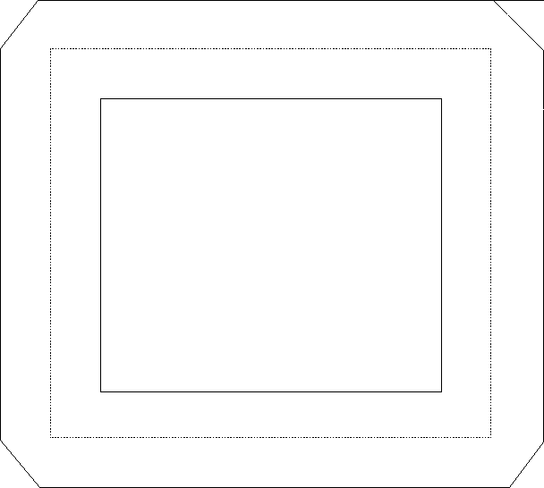

To modify and fill the current path in a single operation, use GpiStrokePath. Then the path is drawn immediately to the output device, with the current geometric line attributes applied to the figures within the path. Certain device drivers can use this function to optimize storage.
GpiStrokePath automatically fills the path in winding mode with the current area pattern symbol. When GpiStrokePath is complete, the path definition is deleted from the device context.
GpiStrokePath is subject to the same constraints as functions that perform simple line modification:
This function accepts as input both the path identifier (which must be 1) and the stroke option (which must be 0L).
When the operating system strokes a path, it draws a geometric line of specified width along the original figure that defined the path and then fills the wide line. If the original figure is not a closed shape, the operating system does not automatically close it before filling the path. The following figure shows the effects of GpiStrokePath on a box originally defined with normal (cosmetic) lines.
Defining Lines with a Geometric Width
The broken line is the figure defined within the path. The solid lines show the path after it has been converted. Each line has a geometric width of n coordinate units, and the line joins have been defined as beveled.
After setting these attributes, the application can draw the line with GpiStrokePath. After the lines are drawn, an application can scale stroked paths with a scaling transformation.
As an alternative to the GpiStrokePath, you can convert the path using GpiModifyPath, which does not draw the path on the current output device. To draw a modified path, use GpiFillPath, which draws the path and fills it with the current area-fill pattern in winding mode. A modified path cannot be filled in alternate mode.
On some devices, it might be that the GpiStrokePath method works better than GpiModifyPath, followed by GpiFillPath.